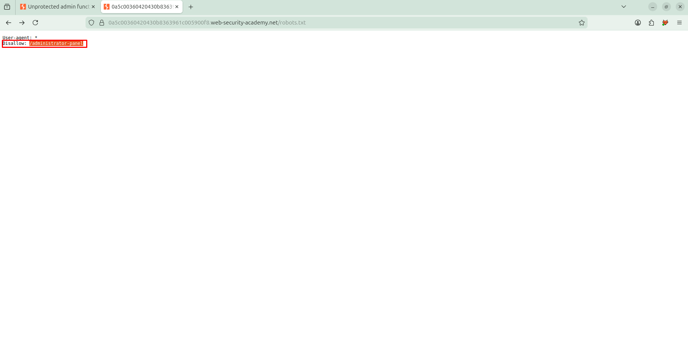

Access control vulnerabilities¶
Lab: Unprotected admin functionality¶
Lab: Unprotected admin functionality | Web Security Academy
-
Trước hết, thử kiểm tra path
robots.txt. Quan sát thấy có path/administrator-panel
-
Sau đó, thực hiện truy cập vào đường dẫn trên. Quan sát truy cập được vào giao diện của role admin

-
Thực hiện xóa user
carlos. Nhận thấy xóa users thành công. Hoàn thành giải lab
Lab: Unprotected admin functionality with unpredictable URL¶
Lab: Unprotected admin functionality with unpredictable URL | Web Security Academy
-
Thực hiện kiểm tra mã nguồn có lộ lọt thông tin (sử dụng
Ctrl+U). Tại đây, nhận thấy trong js có chứa path ẩn/admin-p00sr7
-
Thực hiện truy cập vào path trên. Nhận thấy path trên là giao diện của role admin

-
Thực hiện xóa user. Quan sát thấy xóa thành công. Hoàn thành việc giải lab

Lab: User role controlled by request parameter¶
Lab: User role controlled by request parameter | Web Security Academy
-
Trước hết thực hiện login bằng account
wiener:peter. Sau khi đăng nhập thành công, quan sát thấy trong cookie có 1 trường làAdminđang đặt làfalse→ có thể là cơ chế kiểm tra role trên browser
-
Trong lab đã cho sẵn chúng ta path admin panel
/admin. Thực hiện truy cập thì không vào được bằng accountwiener
-
Thực hiện thay đổi trường
Adminnày thànhtrue. Quan sát thấy có thể truy cập vào admin panel thành công
-
Thực hiện xóa
carlosthành công. Hoàn thành việc giải lab
Lab: User role can be modified in user profile¶
Lab: User role can be modified in user profile | Web Security Academy
- Thực hiện login vào account
wiener:peter. -
Thực hiện truy cập vào admin panel

-
Tại trang
my-account, thực hiện update email. Trong phần mềm burpsuite, thực hiện quan sát response của request gửi tới APIPOST /my-account/change-email. Trong response có chứa trườngroleid. Như vậy, chúng ta cần kiểm tra xem có mass assignment ở đây không.
-
Thực hiện chuyển request trên sang tab Repeater. Thực hiện thêm trường
roleidvà thay đổi giá trị thành 2 (vì trong lab có nói roleid bằng 2 sẽ vào được admin panel).
-
Thực hiện quay lại giao diện và truy cập admin panel. Nhận thấy truy cập thành công

-
Thực hiện xóa user
carlos. Hoàn thành giải lab
Lab: User ID controlled by request parameter¶
Lab: User ID controlled by request parameter | Web Security Academy
-
Thực hiện login vào account
wiener:peter. Quan sát trên url có queryid=wiener. Thử thực hiện thay đổi trường này liệu có thể xem được API key user khác (carlos) hay không
-
Sau khi thay đổi id, lấy được API key của
carlos. Thực hiện submit và giải lab thành công
Lab: User ID controlled by request parameter, with unpredictable user IDs¶
Lab: User ID controlled by request parameter, with unpredictable user IDs | Web Security Academy
-
Thực hiện login vào account của
wiener:peter. Tại trang my-account quan sát thấy API key củawiener. Tuy nhiên thì tại queryidlà một giá trị không thể đoán được.
-
Trang web có 1 số blog. Và khi xem blog thì có tên người dùng trong đó có userid người dùng đó

-
Thực hiện lấy uid kia và quan sát thấy lấy API key của
carlosthành công
-
Thực hiện submit và hoàn thành lab

Lab: User ID controlled by request parameter with data leakage in redirect¶
Lab: User ID controlled by request parameter with data leakage in redirect | Web Security Academy
- Thực hiện đăng nhập vào tài khoản
wiener:peter. Tại trang account, thực hiện quan sát thấy query id là wiener và xem được API key của wiener. -
Thử thực hiện thay id bằng id user khác (carlos). Quan sát thấy trang web bị chuyển hướng về trang
/login
-
Tuy nhiên, thông thường với response 302 redirect thì chỉ có phần header mà ít khi có body → liệu response có chứa thông tin như API key. Quan sát thấy có API key của
carlos\
-
Thực hiện submit API key và hoàn thành lab

Lab: Insecure direct object references¶
Lab: Insecure direct object references | Web Security Academy
-
Thực hiện truy cập vào chức năng live chat. Tại đây, quan sát thấy có chức năng
View transcript. Thực hiện chức năng
-
Khi thực hiện chức năng
View transcipt, quan sát trong phần mềm burpsuite thấy request gửi đến APIGET /download-transcript/3.txtcó tên file dễ đoán → thực hiện đọc các file khác
-
Thực hiển chuyển request gửi đến API
GET /download-transcript/3.txtsang tab intruder, thực hiện kiểm tra file 1→100. Quan sát thấy có file1.txtcó password
-
Thực hiện đăng nhập account
carlosvới passwordvwi8fwxcel8w34op0rv2thành công
-
Thành công giải lab

Lab: URL-based access control can be circumvented¶
Lab: URL-based access control can be circumvented | Web Security Academy
-
Thực hiện truy cập vào trang admin panel. Nhận thấy người dùng đã bị chặn

-
Tuy nhiên đề bài có cho biết backend sử dụng header
X-Original-URL. Ở đây là bài viết về header này có thể sẽ rewrite path (URL rewrite vulnerability - Vulnerabilities - Acunetix) -
Thực hiện bắt một request mà người dùng thường có thể truy cập vào (ví dụ request tới API
/product). Thêm headerX-Original-URLnhư sau và quan sát thấy giao diện admin được trả về
-
Thưc hiện thay đổi
X-Original-URLvới path là path xóa user như sau. Quan sát thấy response báo thiếu param → có lẽ là cơ chế chỉ rewrite path nên sẽ bỏ query nên chúng ta có thể truyển query trên path của request như sau và thực hiện gửi request. Quan sát response trả về xóa user thành công.
-
Mô hình lab có thể như sau

Lab: Multi-step process with no access control on one step¶
Lab: Multi-step process with no access control on one step | Web Security Academy
-
Thực hiện vào account của admin. Thực hiện chức năng upgrade người dùng. Quan sát thấy sẽ có 2 request để thực hiện chức năng này


-
Tuy nhiên, khi chỉ cần gửi request thứ 2 là có thể thành công upgrade user. Ngoài ra, phía backend không kiểm tra phân quyền nên user thường khi gửi request thứ 2 cũng có thể upgrade thành công
-
Thực hiện login với acc
wiener:peter. Giữ lại session trả về
-
Thưc hiện sử dụng session đã lưu ở bước trên, thay thế vào request upgrade như sau. Quan sát upgrade thành công và hoàn thành lab


Lab: Referer-based access control¶
Lab: Referer-based access control | Web Security Academy
-
Thực hiện truy cập vào admin panel. Tại đây thực upgrade user bất kỳ.

-
Trong phần mềm burpsuite, bắt và chuyển request gửi tới API
GET /admin-roles?username=wiener&action=upgrade. -
Thực hiện đăng nhập với account
wiener:peter. Lưu lại session của user wiener
-
Thực hiện thay đổi request gửi tới API
GET /admin-roles?username=wiener&action=upgradebằng cách thay session đã lưu ở bước trước như sau:
-
Quan sát thấy leo quyền thành công. Lab đã được giải